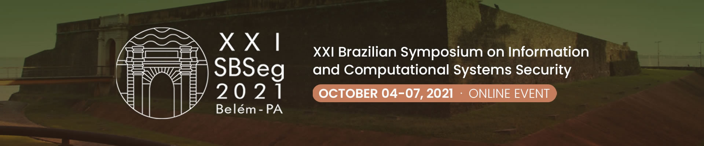

| Hackathon - 02/10 (Sábado) | Hackathon - 03/10 (Domingo) | ||
| Início: | 14:30 | Fim: | 15:30 |
| Hora | Dia 04/10 (Segunda-feira) | ||||
| 8:00 | 9:00 | Credenciamento | |||
| 9:00 | 10:30 | WTE | MC1 | WTICG | |
| 10:30 | 10:45 | Intervalo | |||
| 10:45 | 12:15 | WTE | MC1 | WTICG | |
| 12:15 | 14:00 | Almoço | |||
| 14:00 | 15:00 | Palestra "Trust and Trustworthiness of Voting Systems", Peter Ryan (Palco Principal) |
|||
| 15:00 | 16:30 | FSC | MC2 | WTICG | |
| 16:30 | 17:00 | Intervalo | |||
| 17:00 | 18:30 | FSC | MC2 | - | |
| 18:30 | 19:30 | Palestra "Nunca tivemos tanta e, ao mesmo tempo, tão pouca segurança. Como sair desse impasse?", Cristine Hoepers (Palco Principal) |
|||
| 19:30 | 20:15 | Cerimônia de Abertura (Palco Principal) |
|||
| Hora | Dia 05/10 (Terça-feira) | ||||||
| 8:00 | 9:00 | Credenciamento | |||||
| 9:00 | 10:30 | Salão de Ferramentas | - | ||||
| 10:30 | 10:45 | Intervalo | |||||
| 10:45 | 12:15 | Salão de Ferramentas | Painel: A Criptografia e seu Papel na Sociedade | ||||
| 12:15 | 14:00 | Almoço | |||||
| 14:00 | 15:00 | Palestra "Fighting a Pandemic while Protecting Privacy", Bart Preneel (Palco Principal) |
|||||
| 15:00 | 16:30 | Trilha Principal - ST1 | Trilha Principal - ST2 | ||||
| 16:30 | 17:00 | Intervalo | |||||
| 17:00 | 18:30 | Trilha Principal - ST3 | Trilha Principal - ST4 | ||||
| 18:30 | 19:30 | Palestra "Making Privacy Preserving Machine Learning Practical", Anderson Nascimento (Palco Principal) |
|||||
| Hora | Dia 06/10 (Quarta-feira) | ||||
| 8:00 | 9:00 | Credenciamento | |||
| 9:00 | 10:30 | Trilha Principal - ST5 | Trilha Principal - ST6 | ||
| 10:30 | 10:45 | Intervalo | |||
| 10:45 | 12:15 | Trilha Principal - ST7 | Trilha Principal - ST8 | ||
| 12:15 | 14:00 | Almoço | |||
| 14:00 | 15:00 | Palestra "Cryptography for the Post-quantum Era", Rene Peralta (Palco Principal) |
|||
| 15:00 | 16:30 | Trilha Principal - ST9 | Trilha Principal - ST10 | ||
| 16:30 | 17:00 | Intervalo | |||
| 17:00 | 18:00 | Palestra "VoteXX.org and 7th.estate: Secure online voting and guerrilla democracy", David Chaum (Palco Principal) |
|||
| Hora | Dia 07/10 (Quinta-feira) | ||||
| 8:00 | 9:00 | Credenciamento | |||
| 9:00 | 10:30 | WFC | WGID | WRAC+ | MC3 |
| 10:30 | 10:45 | Intervalo | |||
| 10:45 | 12:15 | WFC | WGID | WRAC+ | MC3 |
| 12:15 | 14:00 | Almoço | |||
| 14:00 | 15:30 | WFC | WGID | MC4 | - |
| 15:30 | 16:00 | Intervalo | |||
| 16:00 | 17:30 | WFC | WGID | MC4 | - |
| 17:30 | 17:45 | Intervalo | |||
| 17:45 | 18:30 | Cerimônia de Encerramento e Premiações: Melhores Artigos, Hackathon e Salão de Ferramentas (trilha especial blockchain) (Palco Principal) | |||
Nota: Reunião plenária anual ocorrerá no dia 14 de Outubro de 2021, às 9h00 (o link da sala virtual será divulgado na lista da CESeg)
|
15:00 - Gestão de Identidade e Acesso para Dispositivos IoT na Smart Grid |
Vilmar Abreu (PUCPR), Altair Santin (PUCPR), Eduardo Viegas (PUCPR), Cleverton Vicentini (PUCPR), Mateus Nunes da Silva (PUCPR) |
|
15:30 - Uma Política de Cache de Identidades Multinível para Névoas Computacionais |
Airton Gomes Filho (UFJF), Bruno Cremonezi (UFPR), Edelberto Silva (UFJF), Alex Vieira (UFJF), José Augusto Nacif (UFV), Michele Nogueira (UFMG) |
|
16:00 - Plataforma para Gestão de Identidades Descentralizadas Baseada em Blockchain |
Silvio Queiroz (UFBA), Eduardo Marques (UEFS), Fabíola Greve (UFBA), Leobino Sampaio (UFBA) |
|
Giovanni da Silva (UFPR), Daniel Fernandes Macedo (UFMG), Aldri dos Santos (UFMG) |
|
|
15:30 - Uma Avaliação do Cenário de Detecção e Evasão do Acesso root no Android |
Vinicius Moraes (UFPE), Jéssyka Vilela (UFPE) |
|
16:00 - Utilizando Metadados de Aplicações e Comunicação entre Processos para Identificar Ameaças no Android |
Rodrigo Lemos (UFPR), Tiago Heinrich (UFPR), Carlos Maziero (UFPR) |
|
Cristiano de Souza (UFSC), Carlos Westphall (UFSC), João Vitor Cardoso (UFSC) |
|
|
Pedro Henrique Barros (UFMG), Gabriel Gomes (UFMG), Leonardo B. Oliveira (UFMG), Heitor Ramos (UFMG) |
|
|
18:00 - Comparação entre LSTM e CLCNN na Detecção de Requisições Maliciosas em Ataques na Web |
Rafael Brinhosa (UFSC), Marcos Michels Schlickmann (IFC - Araquari), Eduardo da Silva (IFC), Carlos Westphall (UFSC, Carla Merkle Westphall (UFSC) |
|
17:00 - Timing Analysis of Algorithm Substitution Attacks in a Post-Quantum TLS Protocol |
Dúnia Marchiori (UFSC), Alexandre Augusto Giron (UFSC), João Pedro Nascimento (UFSC), Ricardo Custódio (UFSC) |
|
Antonio Maia (UFMG), Italo Cunha (UFMG), Leonardo B. Oliveira (UFMG) |
|
|
18:00 - Towards Constant-time Probabilistic Root Finding for Code-based Cryptography |
Dúnia Marchiori (UFSC), Ricardo Custódio (UFSC), Daniel Panario (Carleton University - Canada), Lucia Moura (University of Ottawa - Canada) |
|
09:00 - Métodos de Aprendizado de Máquina Adversariais na Detecção de Anomalias em Redes de Computadores |
Luiz de Camargo (Unesp), Jose Remo Brega (Unesp), Kelton da Costa (Unesp), João Papa (Unesp), Pedro Paiola (Unesp), Carlos Reis (Unesp) |
|
09:30 - Detecção de Ataques Web: Explorando Redes Neurais Recorrentes com Redutor de Dimensionalidade |
Richard Rego (UFSM), Raul Ceretta Nunes (UFSM) |
|
10:00 - Seleção de Características em Stream para a Detecção de Ataques de Rede |
Diego de Abreu (UFPA), Igor Carvalho (UFPA), Antônio Abelém (UFPA) |
|
09:00 - Subversão de Contêiner Criptográfico e Alteração de Dados na Urna Eletrônica Brasileira |
Ivo Peixinho (Polícia Federal), Galileu Sousa (IFRN), Paulo Cesar Wanner (Polícia Federal) |
|
09:30 - Lince: Um Arcabouço para Ofuscação de Estilo de Escrita em Texto |
Antônio Franco (UFMG), Italo Cunha (UFMG), Leonardo B. Oliveira (UFMG) |
|
João Bizzi Velho (Unicamp), Vitor Hugo Galhardo Moia (Samsung Research - Brazil), Marco Aurelio Amaral Henriques (Unicamp) |
|
10:45 - Um Modelo de Detecção de Intrusão baseado em Deep Autoencoders e Transfer Learning |
Roger Santos (PUCPR), Eduardo Viegas (PUCPR), Altair Santin (PUCPR) |
|
Carlo Silva (UPE), Lucas Teixeira (UPE), Bruno Fernandes (UPE), Gerson Castro (Tempest Security Intelligence - Brazil), Eduardo Feitosa (UFAM), Vinicius Garcia (UFPE), João Fausto Lorenzato de Oliveira (UPE), Henrique Ferraz Arcoverde (Tempest Security Intelligence - Brasil) |
|
|
11:45 - Um Sistema de Reputação baseado em Blockchain Contra Ataques de Mensagens Falsas em VANETs |
Claudio Piccolo Fernandes (CUESC), Daniel Adriano (Univali), Carlos Montez (UFSC), Michelle Wangham (Univali) |
|
10:45 - Protegendo Redes de Canais de Pagamento Sem Fio com Janelas de Tempo de Bloqueio Mínimas |
Gabriel Rebello (UFRJ), Maria Potop-Butucaru (Sorbonne Université - France), Marcelo Dias de Amorim (Sorbonne Université - France), Otto Carlos Muniz Bandeira Duarte (UFRJ) |
|
Diego Fernandes Gonçalves Martins (Unicamp), Marco Aurelio Amaral Henriques (Unicamp) |
|
|
Luca Campelli (UFSC), Lucas da Palma (UFSC), Jean Martina (UFSC) |
|
15:00 - Detecção de Bots Sociais: Uma Discussão sobre o Tempo de Vida de Abordagens Tradicionais |
Erick Mata (IME), Gabriela Dias (IME), Ronaldo Salles (IME) |
|
15:30 - WBF Analyzer: Um Método para Detecção de Browser Fingerprinting em Páginas Web |
Geandro Farias de Matos (UFAM), Eduardo Feitosa (UFAM) |
|
Lorhan Sohaky (UFSCar), Bruno Azevedo (UFSCar), André Smaira (UFSCar), Paulo Matias (UFSCar) |
|
15:00 - Inserção de Infraestrutura de Chave Pública no Projeto OpenDHT |
Lucas Dias (UFSM), Tiago Antônio Rizzetti (UFSM), Luciane Neves Canha (UFSM), Wagner Brignol (IFSul) |
|
Yuri Melo (IME), Ronaldo Salles (IME), Frederico Sauer Guimarães Oliveira (UEZO) |
|
|
15:40 - FuzzingTool: Ferramenta para Testes de Intrusão em Aplicações Web |
Vitor Oriel Borges (UFLA), Joaquim Uchôa (UFLA) |
|
Tuany Mariah Lima do Nascimento (UFRN), Laura Emmanuella Santana (UFRN), Marjory Da Costa-Abreu (Sheffield Hallam University - Great Britain) |